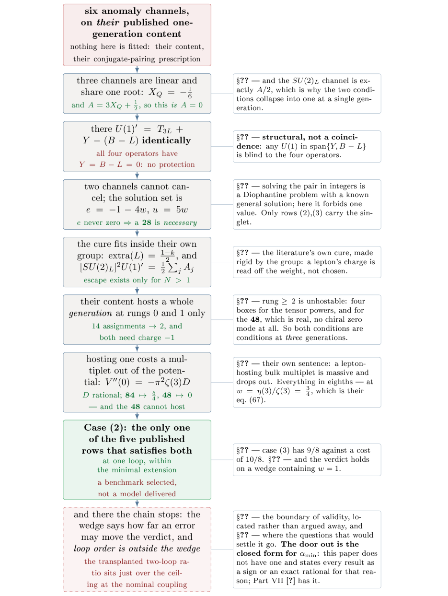
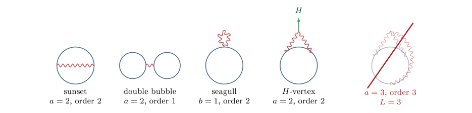

Proton Decay in SU(7) Grand Gauge-Higgs Unification: An Obstruction, Its Minimal Escapes, and the One Row of Their Table 1 That Can Pay for Them (Part VI)
At a glance
What the paper contributes
Komori and Maru's six-dimensional SU(7) grand gauge-Higgs model leaves proton decay to future work. Working inside their construction and with their own equations, the paper finds an obstruction, classifies the minimal escapes and selects one row of their Table 1 as the benchmark to compute next; it does not deliver that model.
- An obstruction at one generation. Three anomaly channels force XQ = −1/6, where U(1)′ = T3L + Y − (B − L) identically and the four dimension-6 |ΔB| = 1 operators are neutral; two further channels require a right-handed neutrino of charge −1, which only a 28 supplies (rows (2) and (3)).
- The escapes, inside their own group. A ladder extra(L) = (1 − k)/2 and the identity [SU(2)L]²U(1)′ = ½ Σj Aj (Proposition 1): fourteen anomaly-free three-generation assignments, two of which fit their tensors. The 48 cannot host a generation, because under diagonal ±1 parities a real representation is vector-like (Proposition 2, a specialisation of Gogoladze–Mimura–Nandi).
- The bill, in eighths. V″(0) = −π²ζ(3)D with D rational per multiplet (84(+,+) ↦ 5/4, 48(+,+) ↦ 0): only case (2) satisfies both necessary conditions, at one-loop curvature.
- A selection rule in closed form. Protection fails iff qφ = |Aj|/n (Proposition 3); qφ = 3/2 protects for every half-integer brane-quark charge.
- The instrument, audited. Their αmin column is not reproduced (an open question, not a defect claim); the verdict holds on a wedge of multiplicative repairs, and two-loop safety is left open.
🚀 Start here: Proposition 1: the left-handed SU(2) anomaly of U(1)′ is half the sum of the proton-operator charges.
Main results:
- Proposition 1: the left-handed SU(2) anomaly of U(1)′ is half the sum of the proton-operator charges
- Proposition 2: under diagonal ±1 parities a real representation furnishes no chiral generation
- Proposition 3: protection fails iff qφ = |Aⱼ|/n: a set with a maximum, so protection is a half-line
🗺️ Map of the results (click a box to go to it)
Dependencies in the written proof: an arrow A → B means that this proof of B uses A. Every result rests on its written proof; the tags record what was checked besides, and each statement's “Evidence & scope” block says how far. The colour of a box is its strongest tag, in the order above; the tags in the box give the rest. Boxes with a thick border are the main results; click a box to read the statement.
📐 Setting (copied from the paper, §2)
The model of [ 1 ] is six-dimensional \(SU(7)\) on \(S^1/{\mathbb {Z}}_2\times S^1/{\mathbb {Z}}_2\). Its orbifold parities are their eqs. (11)–(13),
the Standard-Model fermions are localised at fixed points (their eqs. (43)–(47)), and the bulk carries 6D Dirac fermions in \(\mathbf{7}\), \(\mathbf{28}\), \(\mathbf{48}\) and \(\mathbf{84}\) whose only role is the one-loop Higgs potential. Their Wilson-line vacuum leaves \(SU(3)_C\times U(1)_{\rm em}\) together with one extra abelian factor, their eq. (79),
which they say must be broken by a \(U(1)'\)-charged 4D scalar on a fixed point. (§3) Write \(X_Q\) for the \(U(1)'\) charge of the brane quark doublet. […] The four dimension-6 \(|\Delta B|=1\) operators then carry a single \(U(1)'\) charge
(§4) \(\mathrm{extra}(L)=\frac{1-k}{2}\) — a ladder spaced by \(1/2\) and indexed by how many index-7 boxes the multiplet carries. (§6) A vacuum expectation value of charge \(q_\varphi \) does not destroy the symmetry: it breaks \(U(1)'\) to a discrete subgroup, and an operator of charge \(A\) can be dressed with \(\langle \varphi \rangle \) insertions only if \(A/q_\varphi \in {\mathbb {Z}}\).
1 Introduction
No numbered statement in this section.
Its figures and tables are below; its text is in the paper, p. 2.
🖼️ Figure 1

The chain, and it is one chain: every statement in this paper descends from the six anomaly channels evaluated on [ 1 ] ’s own content. Left, the thread; right, what each link buys and where it is done. Read top-down it is an obstruction (the first three links, which depend on no extension of ours), then a classification of the escapes (the next two, which assume three generations and their inventory), then a benchmark (the next two). The green box selects the row worth computing in full; it does not compute it. The dashed box is not a link but the edge of the chain.
2 What is inherited, and what is computed
The obvious Cartan for their generator labels — the nested chain \(SU(2)\subset SU(3)\subset \dots \subset SU(7)\), whose diagonal generators sit at \(3,8,15,24,35,48\), where theirs sit — reproduces eleven of the thirteen constants of their eq. (54) and fails on the three diagonal ones. It reads as “their paper has two errors in the diagonal sector.” It is not: the guess is wrong, refuted by their own eqs. (78) and (79), and it puts \(T^{48}\) — which they state commutes with the Wilson line — on a generator that does not.
🆕 Classical and new: the paper: the guess «reads as “their paper has two errors in the diagonal sector.” It is not: the guess is wrong, refuted by their own eqs. (78) and (79)» (§2).
↳ Not used by another result of the paper.
3 All six channels, and what they force
No numbered statement in this section.
It is prose only (no statement, figure or table): read it in the paper, p. 7.
4 A ladder inside their own \(SU(7)\)
For \(N\) generations with proton-operator charges \(A_j=3a_j+l_j\),
🆕 Classical and new: the paper lists it among what is ours (§9); at N = 1 it is the entry 3X_Q/2 + 1/4 = A/2 of the anomaly table; the family-dependent cure it mirrors is Lee–Ma [FamilyU1].
↳ Not used by another result of the paper.
💡 In plain words (commentary, not part of the paper)
1. Give each of \(N\) generations a proton-operator charge \(A_j=3a_j+l_j\) under the leftover \(U(1)'\). Then the mixed anomaly \([SU(2)_L]^2\, U(1)'\) is exactly half of \(\sum _jA_j\). 2. Why it matters: anomaly cancellation asks for \(\sum _jA_j=0\), and proton protection asks for \(A_j\ne 0\) for every \(j\). With one generation these are the same equation, so the published one-generation model cannot have both: that is the obstruction of §3, where the \(SU(2)_L\) channel is \(\tfrac 32X_Q+\tfrac 14=A/2\). With three generations a sum can vanish with no term vanishing, so a family-dependent charge escapes, and inside \(SU(7)\) the lepton charges come from the ladder \(\mathrm{extra}(L)=(1-k)/2\). 3. The paper obtains the identity by summing the anomaly state by state over the generations. The family-dependent cure itself is Lee and Ma’s; what the paper claims is the identity and the ladder inside this model. Imposing all six channels leaves 14 assignments, of which exactly two fit inside the model’s own tensors, and both need a singlet of charge \(-1\).
🛡️ Evidence & scope
Program: the ladder extra(L) = (1−k)/2, the identity summed state by state over N generations, the 14 anomaly-free assignments. scripts/su7_family_u1.py
Program: the 14 assignments re-derived by an independent path, and the two that fit their tensors. scripts/su7_realisable.py
Program: the six anomaly channels on the published one-generation content (and a Sage re-derivation, per §3). scripts/su7_anomaly_channels.py
Let the orbifold parities \(P_5,P_5'\) act diagonally on the indices of the fundamental, so that a component of a bulk multiplet survives in the multiplet of parities \((\eta ,\eta ')\) iff \(P_5P_5'=\eta \eta '\) and then carries \(4\)D chirality \(-\eta \, P_5\) (their eqs. (37)–(40)). Then for a real representation the surviving spectrum is vector-like, with no chiral state at either choice of \((\eta ,\eta ')\).
Lean · ours, in partshow
added to the Lean repository after publication (21-oct-2026): the pairing (i, j̄) ↦ (j, ī) for diagonal ±1 parities, and the counts 18/18, 24/24 with the controls 10 and 34
GaugeHiggsUnification.SU7RealPairing.adjoint_vectorLikeGaugeHiggsUnification.SU7RealPairing.adjoint_unpaired_eq_zeroGaugeHiggsUnification.SU7RealPairing.adjoint_survivors_ppGaugeHiggsUnification.SU7RealPairing.adjoint_survivors_pmGaugeHiggsUnification.SU7RealPairing.sym2_unpairedGaugeHiggsUnification.SU7RealPairing.sym3_unpaired
✅ Checked when this page was built: SU7RealPairing.lean compiles with Lean 4.35.0, no errors, no sorry. Axioms — adjoint_vectorLike: propext, Classical.choice; adjoint_unpaired_eq_zero, adjoint_survivors_pp, adjoint_survivors_pm, sym2_unpaired, sym3_unpaired: propext, Classical.choice, Quot.sound.
Reproduce: Lean 4.35.0, Mathlib f0b4c8150aa0; in that Lean project, lake env lean SU7RealPairing.lean (SHA-256 of the compiled file: 179d657feb7879fa…; a source page on this site may show it with comments edited, under its own hash).
Trust base: 🔒 kernel only — only part of the statement is formal (see the box). Lean: 6 results, standard axioms only
🆕 Classical and new: not claimed as new: that adjoint matter is vector-like is stated as well known by Gogoladze–Mimura–Nandi [GMN], who cure it with a Z₃ projection; the paper claims the specialisation to the ±1 diagonal parities, the counts and the chiral controls (§9).
↳ Not used by another result of the paper.
For the adjoint \(\mathbf{7}\otimes \mathbf{\bar7}-\mathbf{1}\) the conjugate of the component \((i,\bar\jmath )\) is \((j,\bar\imath )\), which lies in the same multiplet. Since the parities are diagonal, \(P_5P_5'(j,\bar\imath )=p_jp_i=P_5P_5'(i,\bar\jmath )\) and \(P_5(j,\bar\imath )=P_{5,j}P_{5,i}=P_5(i,\bar\jmath )\): the two survive together and with the same chirality. In an all-left-handed convention the two surviving Weyl fields transform in conjugate gauge representations and therefore admit a gauge-invariant Dirac mass — and their own prescription, a conjugate fixed-point fermion against each unwanted zero mode, supplies one. The argument uses no property of the Wilson line and none of the particular values of these parities — but it does use that they are \(\pm 1\) and diagonal, which is what makes the projection commute with conjugation, and that hypothesis is not free. A \({\mathbb {Z}}_3\) projection has complex eigenvalues, breaks the pairing, and is precisely how the literature obtains chiral families from an adjoint [ 13 ] . Their eqs. (37)–(40) are \({\mathbb {Z}}_2\), so that escape is closed in their model and not in general. □
💡 In plain words (commentary, not part of the paper)
1. When the orbifold parities are diagonal with entries \(\pm 1\), a bulk multiplet in a real representation, such as the adjoint \(\mathbf{48}\), leaves only vector-like zero modes: no chiral state, whatever parities \((\eta ,\eta ')\) it carries. So the \(\mathbf{48}\) cannot host a lepton generation. 2. Why: the conjugate of the adjoint component \((i,\bar\jmath )\) is \((j,\bar\imath )\), in the same multiplet; with diagonal parities both components have the same parity products, so they survive together and with the same chirality, and the pair can be given a Dirac mass. Counted on the model’s content: \(18\) of \(18\) surviving states paired in \(\mathbf{48}^{(+,+)}\), \(24\) of \(24\) in \(\mathbf{48}^{(+,-)}\); the control, the \(\mathbf{28}\) and the \(\mathbf{84}\), leaves \(10\) and \(34\) unpaired. 3. Not new as a mechanism, as the paper says: that adjoint matter is vector-like is stated as well known by Gogoladze, Mimura and Nandi, who cure it with a \(\mathbb Z_3\) projection, unavailable with \(\pm 1\) parities. What matters here is the price: a \(\mathbf{48}^{(+,+)}\) costs exactly \(D=0\), so had it been able to host the escape, case (3) would have paid nothing and the selection of case (2) would fail.
🛡️ Evidence & scope
Program: the 48 at both parities: 18 of 18 and 24 of 24 surviving states paired with their conjugates; control: the 28 and the 84 leave 10 and 34 unpaired. scripts/su7_adjoint_is_vectorlike.py
Program: the adversarial run that made the proposition necessary: the brane escape priced, every other gate open. scripts/su7_brane_partner.py
5 The bill, in eighths
No numbered statement in this section.
Its figures and tables are below; its text is in the paper, p. 11.
🖼️ Figure 2
![\includegraphics[width=1.0\textwidth ]{figures/paperfig-2.png}](images/img-0002.png)
Table 1 of [ 1 ] with the two conditions of this paper imposed. The \(\nu _R\) column is §??: which rows contain a Standard-Model singlet of \(U(1)'\) charge \(-1\), a statement about which components exist and therefore immune to everything in §??. The two \(D\) columns are §??, before and after donating one \(\mathbf{84}^{(+,+)}\) to host the third lepton generation; every entry is an exact rational in eighths, and the coloured bar carries the sign, which is the whole content. Case (3) — the row [ 1 ] single out as particularly interesting — has only \(9/8\) to spend against a cost of \(10/8\). Generated by make_figures_su7.py from the archived su7_repair_space.json.
6 The selection rule is a half-line, not a tuning
Three anomaly channels force \(X_Q=-1/6\), and \(-1/6\) is not a multiple of \(1/2\). So, absent a Green–Schwarz mechanism, their own consistency forces the permissive reading of what may live at a fixed point — and the permissive reading is precisely what puts the dangerous point \(A=0\) within reach. Their construction already uses it: the reason they give for localising the quarks, in the sentence before their eq. (47), is that the fractional hypercharges of quarks cannot be obtained from tensor products of \(\mathbf{7}\)s. A brane field of theirs therefore already carries a charge off the bulk lattice — for hypercharge — and \(X_Q\) inherits exactly that freedom.
🆕 Classical and new: the paper: «the permissive reading is theirs, not a licence we take»; their quarks are already localised for their fractional hypercharges (§6).
↳ Not used by another result of the paper.
Protection fails at \(q_\varphi \) iff \(q_\varphi =|A_j|/n\) for some generation \(j\) and some integer \(n\ge 1\). That set is countable and has a maximum, so protection is a half-line.
Lean · ours, in partshow
added to the Lean repository after publication (23-oct-2026): for A_j ≠ 0: protection fails at q iff q = |A_j|/n, n ≥ 1, and the failure set has maximum max_j |A_j|
✅ Checked when this page was built: SU7QPhiSelection.lean compiles with Lean 4.35.0, no errors, no sorry. Axioms — fails_iff, isGreatest_failSet: propext, Classical.choice, Quot.sound.
Reproduce: Lean 4.35.0, Mathlib f0b4c8150aa0; in that Lean project, lake env lean SU7QPhiSelection.lean (SHA-256 of the compiled file: 39be48b8fd929263…; a source page on this site may show it with comments edited, under its own hash).
Trust base: 🔒 kernel only — only part of the statement is formal (see the box). Lean: 2 results, standard axioms only
🆕 Classical and new: the mechanism (a residual discrete gauge symmetry from a broken U(1)) is Krauss–Wilczek and Ibáñez–Ross, and the leftover-U(1) breaking in gauge-Higgs unification is Dong [GHK]; the paper claims the closed-form rule for this model (§9).
↳ Not used by another result of the paper.
💡 In plain words (commentary, not part of the paper)
1. A scalar of charge \(q_\varphi \) that breaks \(U(1)'\) leaves a discrete symmetry, and an operator of charge \(A\) survives only if \(A/q_\varphi \) is an integer. So protection of the proton operators fails exactly when \(q_\varphi =|A_j|/n\) for some generation \(j\) and some integer \(n\ge 1\). That set of bad charges is countable and has a largest element: above it every charge protects, so protection is a half-line, not a fine tuning. 2. The paper checks the closed form against a brute scan of every rational \(p/q\le 2\) with \(q\le 36\) for all 14 assignments: \(18\, 648\) values, no disagreement. For the minimal assignment, with \(A=(\tfrac 16,\tfrac 16,-\tfrac 13)\), the bad set is \(\{ 1/(3n)\} \), so all three charges the model can supply (\(\tfrac 12,1,\tfrac 32\)) protect it. 3. And \(q_\varphi =3/2\), the charge of the pure index-7 component of the \(\mathbf{84}\), forbids the four operators for every half-integer brane-quark charge, by a mod-3 argument, with preconditions the paper writes in: one condensing scalar only (any second one from the model’s content collapses the residual group), a fixed normalisation, and only the dimension-6 operators. The mechanism (a residual discrete gauge symmetry) is Krauss–Wilczek and Ibáñez–Ross; the paper claims the closed-form rule for this model.
🛡️ Evidence & scope
Program: closed form against a brute scan of every rational p/q ≤ 2 with q ≤ 36, for the 14 assignments: 18 648 values, 0 disagreements. scripts/su7_qphi.py
Program: adversarial audit: qφ = 1/2 fails at every m, qφ = 1 at every odd m, qφ = 3/2 never. scripts/su7_qphi_socratic.py
Program: the residual group and what a second condensing scalar does to it. scripts/su7_residual_group.py
7 The instrument, and where it fails
Everything excluded in this section lives at one loop, and the three structural candidates named above are the one-loop candidates. There is a fourth: loop order. The Wilson-line potential is the Polyakov-loop potential of thermal gauge theory, where the two-loop calculation is old. At two loops in pure gauge it is a multiplicative, background-independent rescaling of the one-loop result, \(\Omega ^{(2)}/\Omega ^{(1)}=-5g^2C_2(A)/(16\pi ^2)\) for any classical or exceptional group [ 22 ] — which is excluded here already, because the \(\lambda \) the \({\alpha _{\min }}\) column wants is not one number. With fermions that proportionality fails [ 23 ] , and the expressions carry Bernoulli polynomials of the individual background angles and of their pairwise differences. Those angles are the Wilson-line charges, so a product of two such structures generates cosines at \(c_b\pm c_d\): with \(c\in \{ 1,2,3\} \) that reaches \(c\in \{ 0,\dots ,6\} \), and \(4,5,6\) lie outside the set. Numerically \(5g^2C_2(A)/(16\pi ^2)\) is \(7\)–\(14\, \% \) for \(g_4\in [0.55,0.80]\) at \(C_2(A)=7\), against the \(4\)–\(20\, \% \) rescaling the \({\alpha _{\min }}\) column asks for: the same order. We have not computed this term for this model and nothing here depends on it; what it establishes is that the list above is the one-loop list. It does not rescue Table 1 either, since their potential, their \(m_h\) and the finiteness that motivates gauge-Higgs unification are all one-loop statements. The bounded question it leaves is group-theoretic and needs no loop integral, and we answer it: does the two-loop fermionic potential depend on the representation only through the multiset of its charges? It does not. With \(\mathrm{Tr}(T^aT^b)=\delta ^{ab}/2\), their weight is exactly \(2\sum _a|T^a_{ij}|^2\) on the fundamental, so the general-\(R\) replacement is forced to be \(W(w,w')=\sum _a|\langle w|T^a_R|w'\rangle |^2\), whose row sums are \(C_2(R)\); and \(\mathbf{48}^{(+)}\) against \(4\times \mathbf{7}^{(+)}+\mathbf{7}^{(-)}+\mathbf{28}^{(+)}\) have identical one-loop term tables — hence identical \(F\), \({\alpha _{\min }}\), \(m_h\) and \(D\) — with \(\sum C_2\) of \(7\) against \(24.8571\). The one-loop potential is blind to the charge-zero states, so it fixes the Dynkin index and not the Casimir. Neither member of that pair is a Table 1 content, so nothing published here is separated by it.
🆕 Classical and new: the two-loop facts are Dumitru–Guo–Korthals Altes [DGKA] (pure gauge) and Guo–Du [GuoDu] (with fermions); the paper says «We have not computed this term for this model and nothing here depends on it», and answers only the group-theoretic question (two contents with identical one-loop tables and Σ C₂ of 7 against 24.8571).
↳ Not used by another result of the paper.
🛡️ Evidence & scope
Program: the transplanted two-loop ratio against the wedge, with the control that a common rescaling returns exactly 1. scripts/twoloop_wedge.py
Numerical illustration (not a proof): archived data only: the Casimirs and the colliding pairs 48(±) against 4×7 + 7 + 28 (Σ C₂ = 7 against 24.857); the script that wrote this file is not among the published scripts. paper_data/su7_twoloop_weight.json
The first version of that control was this programme’s usual one: fix \((c,p,s)\) at the winner, reverse the \({\alpha _{\min }}\) column, re-solve. It returns ratios \(3.41\) and \(3.51\) and the verdict “informative” on tests that are dead. Scanning is itself a search, so a control that does not re-run the search measures nothing. Both the broken guard and the fix are in the archived output.
🆕 Classical and new: the paper records its own failed control: fixing the winner gave ratios 3.41 and 3.51 and the verdict «informative» on tests that are dead; both the broken guard and the fix are in the archived output (§7).
↳ Not used by another result of the paper.
🖼️ Figure 3
![\includegraphics[width=1.0\textwidth ]{figures/paperfig-3.png}](images/img-0003.png)
The control that decides §??’s last exclusion. Each candidate repair is a scan — one extra channel \(v\sum _n s^n\cos (c\pi n\alpha )/n^p\) over \(c\in [0.5,40]\), \(p\in \{ 3,\dots ,7\} \), \(s=\pm 1\), or the fermion sector run as \(1/n^q\) — so the control must re-run the whole scan on scrambled data, not re-solve at the winning parameters. Grey dots: the best residual of the full search on each of the \(118\) non-trivial permutations of their own \({\alpha _{\min }}\) column, divided by the real fit’s. A discrimination needs the whole cloud beyond the dashed threshold; every cloud instead straddles \(1\), and on two of the three tests the scrambled data beats the real data. Generated by make_figures_su7.py.
8 Why the discrepancy does not reach the conclusion
No numbered statement in this section.
Its figures and tables are below; its text is in the paper, p. 19.
🖼️ Figure 4
![\includegraphics[width=1.0\textwidth ]{figures/paperfig-4.png}](images/img-0004.png)
Left: the \((w(\mathbf{28}),w(\mathbf{84}))\) plane, coloured by verdict after donating one \(\mathbf{84}^{(+,+)}\). The amber region is where case (2) survives and case (3) does not — the conclusion of this paper. Open marks are every repair the anchor discrepancy has ever been fitted to (§??); all of them lie inside it, and so does \(w=1\). The dashed diagonal carries the interval \((27/46,\, 27/26)=(0.587,\, 1.038)\), which reproduces the \(\lambda _{\rm crit}\) of §?? by a different route. Right: why it is a wedge — \(D\) for the two rows is two planes over the same square, with slopes \(15/4\) and \(5/4\) in \(w(\mathbf{84})\), and the conclusion is the slab between their zero sets. Generated by make_figures_su7.py.
🖼️ Figure 5
![\includegraphics[width=1.0\textwidth ]{figures/paperfig-5.png}](images/img-0005.png)
Where the boundary of validity of this paper’s verdict sits. The verdict is a statement about one number, the fermion-to-gauge weight ratio \(w\); §?? shows it holds on the wedge, whose ceiling is \(27/26\) (red). What the wedge does not absorb is loop order, so the curve is the transplanted two-loop ratio \((1+\delta _f)/(1+\delta _b)\) built from [ 22 ] ’s gauge half and [ 23 ] ’s fermionic one, against the four-dimensional coupling of those results. It crosses the ceiling at \(g_4=0.6205\), and at the \(g_4=0.63\) this series uses it sits \(0.13\, \% \) above: on the wrong side, and by less than half a per cent. Not drawn, and deliberately: the five row-by-row reweightings the \({\alpha _{\min }}\) column asks for. They are a fit and not a measurement of \(w\), the argument that used them is withdrawn on the previous page, and a figure may not keep making an argument the text has retracted. Drawn by make_figures_su7.py from the archived twoloop_wedge.json.
9 Attribution
No numbered statement in this section.
Its figures and tables are below; its text is in the paper, p. 23.
|
mechanism |
status |
|
the anomaly-free \(U(1)\) extensions of the Standard Model are \(\mathrm{span}\{ Y,B-L\} \), and gauged \(B-L\) needs right-handed neutrinos of charge \(-1\) |
textbook, forty years old |
|
a gauged \(B-L\) fails to forbid the \(B-L\)-conserving proton operators; the cure is a family-dependent \(B-x_iL\) |
[ 7 ] , verbatim in its abstract; the dimension-6 statement is Weinberg and Wilczek–Zee [ 5 , 6 ] |
|
placing families in different representations or at different fixed points of an orbifold GUT, and thereby suppressing proton decay |
|
|
a broken extra \(U(1)\) leaves a residual discrete gauge symmetry that can forbid the dimension-4, -5 and -6 proton operators |
|
|
localised anomalies constrain brane charges, and Green–Schwarz can absorb mixed \(U(1)\) ones |
von Gersdorff–Quirós; Kojima–Takenaga–Yamashita [ 12 ] , which [ 1 ] cite as their ref. [13] |
|
brane fields in orbifold GUTs need not furnish representations inherited from the bulk |
standard practice; it is why their own quarks can be localised at all |
|
matter in the adjoint — a real representation — is vector-like, and it is a \({\mathbb {Z}}_3\) projection that chiralises it |
[ 13 ] , verbatim in its introduction: “It is well known that… The matter in the adjoint representation is always vector-like, but one can project out the vector-like partner by a \(Z_3\) transformation.” Proposition 2 is the specialisation to their \(\pm 1\) diagonal parities, where that cure is unavailable; the counts and the chiral controls are ours |
|
a leftover \(U(1)\) in gauge-Higgs unification broken by a scalar with a vacuum expectation value of order \(1/R\), with the surviving charge read off the direction of that value |
[ 19 ] , eqs. (50)–(54), (77), (79) — the mechanism of §6 is theirs |
|
no local brane Yukawa for the charged leptons in gauge-Higgs unification, and the obstruction is called generic |
[ 16 , 17 ] — relevant to the rung-by-rung Yukawa closure of §4, which is why that closure is a control and not a result |
|
a rule of thumb selecting the fermion content from the curvature of the Wilson-line potential at the origin |
[ 18 ] . This is the closest prior art to §5: their Hessian factorises at \(\alpha =0\) and their selection rule is our arithmetic — at the origin, and only there. What is not theirs is the exact rational \(D\) per multiplet, and the donation cost that follows from it |
|
minimality plus anomaly cancellation fixing the Standard-Model family content |
[ 20 ] — background to §3, which is a relative statement inside a fixed model rather than a classification |
Colour: red = no / fails.
10 Verification
No numbered statement in this section.
Its figures and tables are below; its text is in the paper, p. 24.
|
Claim |
Where, and on what |
|
Three anomaly channels force \(X_Q=-1/6\), which is exactly \(A=0\) |
§3; six channels, re-derived independently under Sage from the \(A_6\) character ring |
|
\(U(1)'=T_{3L}+Y-(B-L)\) on every field, and all four operators have \(Y=B-L=0\) |
§3, an identity |
|
Two channels cannot cancel and demand a singlet of charge \(-1\); it exists in the \(\mathbf{28}\) and nowhere else, so only rows (2),(3) supply it |
§3; \(\sum x=-1\) and \(\sum x^3=-1\) are independent |
|
A \(\mathbf{28}\) is necessary and not merely minimal: the solution set is \(e=-1-4w\), \(u=5w\), so the net \(\mathbf{28}\) number is never zero |
§3; and a brute-force scan with no \(\mathbf{28}\) returns nothing while the same scan with one condition dropped returns solutions |
|
Only two of the fourteen assignments fit inside their own tensors, and both require charge \(-1\) |
§4; rung \(\ge 2\) is unhostable — four boxes for the tensor powers, and for the \(\mathbf{48}\), which is not one, no chiral zero mode. The fourteen are re-derived by an independent implementation |
|
Proposition 2 — the mechanism is [ 13 ] ’s, the specialisation ours: under their \(\pm 1\) diagonal parities a real representation furnishes no chiral generation, so the \(\mathbf{48}\) cannot host the escape — and a \(\mathbf{48}^{(+,+)}\) would have cost \(D=0\) exactly |
§4, proved in three lines and counted in su7_adjoint_is_vectorlike.py, with the \(\mathbf{28}\) and \(\mathbf{84}\) as the control that must come out chiral and does (\(10\) and \(34\) unpaired states). Case (3) holds three \(\mathbf{48}\)s, so this is a step and not an aside |
|
Their eq. (81), quoted for the 5D \(SU(4)\) model, is forced by their own eq. (54): the \(W\) carries Wilson-line charge \(\tfrac 12\) and the photon \(0\) |
§2; the charge-\(1\) modes exist, so the control is not vacuous |
|
\(\mathrm{extra}(L)=(1-k)/2\), and \(\mathrm{extra}(L)+\mathrm{extra}(e^c)=1/2\) on every rung |
§4; rung 0 returns their own eq. (43) |
|
Proposition 1: \([SU(2)_L]^2U(1)'=\tfrac 12\sum _jA_j\) |
§4, exact; 14 assignments survive all six channels |
|
Rung 1 is hosted by an \(\mathbf{84}^{(+,+)}\), which is in every row of Table 1; the \(\mathbf{35}\) cannot host it |
§4, from their eqs. (37)–(40) |
|
\(V''(0)=-\pi ^2\zeta (3)D\), \(D\) rational; \(\mathbf{48}^{(+,+)}\mapsto 0\), \(\mathbf{84}^{(+,+)}\mapsto 5/4\) |
§5; the truncation residual is predicted to \(2\, \% \) |
|
Case (2) is the only one of the five published rows that supplies the \(\nu _R\) and survives the donation — within the minimal extension, at one-loop curvature |
§3 \(+\) §5, Fig. 2; everything in eighths. A benchmark selected, not a model delivered: the modified potential is not recomputed. Depends on their eq. (67): the verdict holds on \(w\in [74/99,118/151)\) and only \(w=3/4\) is admissible there |
|
Proposition 3: protection fails iff \(q_\varphi =|A_j|/n\); the set has a maximum |
§6; \(18\, 648\) brute-scan values, \(0\) disagreements |
|
\(q_\varphi =3/2\) forbids all four operators to all orders for every half-integer \(X_Q\) |
§6; and \(q_\varphi =1/2\), \(1\) both fail, so it is not vacuous |
|
\(K=m_h{\alpha _{\min }}/\sqrt{F''({\alpha _{\min }})}\) is row-independent, \(R_5,R_6,k\) cancelling |
§7, verified symbolically |
|
\(D(\mathbf{48})\equiv 0\), and the conclusion is a wedge containing \(w=1\) and every fitted repair |
§8, Fig. 4; rebuilt from group theory in Sage |
|
Their \(\mathbf{48}\)-subscripted terms in eq. (76) must be \(\mathbf{84}\) terms, identified by a count |
§7; the \(\mathbf{84}\)’s fifteen doublets come out only then |
|
\(F=\sum m\, \mathrm{Re}\, \mathrm{Li}_5(s\, e^{ic\pi \alpha })\) and \(F''\) a sum of \(\mathrm{Re}\, \mathrm{Li}_3\), with no truncation |
§7, verified in Sage; it is what makes the \(30\)-digit \(F''(0.021)\) exact |
|
Their eqs. (54),(41),(57),(69),(70) and their KK spectrum are derived, not assumed, and nothing in them is wrong |
§2; \(13/13\) structure constants, the omitted one exactly zero, charges \(\{ 0,\pm \tfrac 12,\pm 1\} \) with multiplicities \(26,20,2\) |
|
Their eq. (68) too: its three coefficients follow from the adjoint’s \((q,P_5P_5',P_6)\) table with two weights, \(a=2\) and \(b=\tfrac 12\) |
§2; overdetermined, and the two rows that fix \(a\) agree. This is the sector the wedge holds fixed, and it was the only one checked against nothing but their own eq. (62) |
|
Unstated in their paper, reported as data and not as defects |
Where |
|
Their \(\mathbf{28}\) is \(\mathrm{Sym}^2(\mathbf{\bar7})\), the conjugate |
§2; \(4/4\) against \(2/4\), and the test discriminates (\(\mathbf{84}\): \(10/10\) against \(1/10\)). Invisible to \(V_{\rm eff}\) |
|
\(\pi _5=\pi _7\): the two indices the Wilson line mixes carry the same \(P_5P_5'\), without which their eq. (72) is not well defined |
§2, §8; the first thing the Sage construction checks |
|
Their spectrum requires a right-handed neutrino, not stated in their paper |
§3 |
|
Their Table 1 is internally consistent: eq. (82) makes \(1/R_5\) a function of \({\alpha _{\min }}\), and all five printed pairs agree |
§7; a control on their table that could have fired. On rows (3),(4) the \(1/R_5\) column is the sharper constraint |
|
Open, and stated as open |
Why |
|
Their Table 1 \({\alpha _{\min }}\) is not reproduced from their eqs. (68),(72)–(76) |
§7; gauge sector exact, truncation irrelevant, transcription verified three ways, no multiplicative or single-channel repair survives its control |
|
Case (3) has \(F''{\lt}0\) at its own published \({\alpha _{\min }}\) under our assembly |
§7; exact to 30 digits, and the inflection is at \(1.133\times \) that value |
|
The exclusion list above is the one-loop list |
§7, Observation 3. Two-loop pure gauge is multiplicative and therefore already excluded; with fermions it is not, and its size is the same order as the rescaling the \({\alpha _{\min }}\) column wants. Not computed here, and stated so |
|
And so is the wedge: it tolerates \(1/27\) of relative gauge-versus-fermion rescaling, and the published two-loop rescalings put the transplant over it at the nominal coupling |
§8. With [ 23 ] ’s fermionic half included, \(0.78\)–\(1.72\) times the margin over \(g_4\in [0.55,0.80]\) — not the \(1.8\)–\(3.8\) of a gauge-only reading — crossing at \(g_4=0.6205\) and at \(1.033\) at \(g_4=0.63\). An earlier draft answered this with the anchor column; that answer is withdrawn |
|
And both inputs of that estimate are four-dimensional and thermal |
their group factors are this algebra, their loop integrals are not, and the \(6/5\) is made of the latter. [ 22 ] add a limitation of their own, in their own words: they have “not succeeded in finding a general proof” of eq. (66) that avoids explicit evaluation, and do not know how the combinatorics works inside the Weyl chamber — their proof covers the straight paths from the origin to the \(Z(N)\) minima, along its edges. An \({\alpha _{\min }}\simeq 0.05\) is on neither |
|
The two rows that fail are exactly the two containing a \(\mathbf{48}\), and the one satisfiable system asks for \(w(\mathbf{48})=5.59\), \([5.20,6.00]\) at \(95\, \% \) under their own rounding |
§7; confounded with their being the two smallest \({\alpha _{\min }}\), and five rows cannot separate the readings. Their eq. (75) is verified twice over, so no defect is claimed |
|
The instrument is validated only as an approach |
§7: Part V’s independent implementation reproduces [ 2 ] exactly, but it is a different implementation, so it does not certify the \(SU(7)\) assembly |
|
Retracted, and left visible |
Why |
|
“the exact eqs. (62)–(65) need \(k\approx 1.2\)” |
never computed; a conclusion line printed as a literal string. The real correction is \(1.5\, \% \) at \(k=1.2\). §7 |
|
“one extra channel repairs the anchor, and the control says it is informative” |
the control fixed the winner instead of re-running the search. §7, Fig. 3 |
11 Open problems
No numbered statement in this section.
Its figures and tables are below; its text is in the paper, p. 27.
🖼️ Figure 6

Why the two-loop group factor cannot be cubic. The loop number of a connected vacuum graph is \(L=1+\frac12\sum _k V_k(k-2)\), a function of the valences alone. Background legs (green) are external classical fields and carry weight zero, so they may be attached without limit — including at the three-gluon vertex that [ 24 ] name as the non-abelian frontier, fourth panel, which is a genuine two-loop diagram whose matter trace is nevertheless only \(\mathrm{tr}_R(T^aT^b)\): its new structure lives in the gauge vertex, hence in the integral, not in the group factor. Only matter-gauge vertices carry both weight and a generator, so the trace order \(a+2b\) is bounded by the total weight \(2\). The fifth panel is the cheapest way to a cubic trace and it costs a third loop.
Data availability
No numbered statement in this section.
It is prose only (no statement, figure or table): read it in the paper (PDF).
Acknowledgements
No numbered statement in this section.
It is prose only (no statement, figure or table): read it in the paper (PDF).
📊 Tables
Every table of the paper, in its order: click one to unfold it, with where the paper cites it, how its numbers were checked, and its data as CSV. The typeset table is one click away, on its page of the PDF.
Table without a number, in the text of §3 All six channels, and what they force
| channel | coefficient, as a polynomial in $X_Q$ | vanishes at |
| $[{SU(3)}_C]^2\,X$ | $0$ | every $X_Q$ |
| $[{SU(2)}_L]^2\,X$ | $\tfrac32X_Q+\tfrac14$ | $X_Q=-1/6$ |
| $X^2Y$ | $-3X_Q-\tfrac12$ | $X_Q=-1/6$ |
| $XY^2$ | $-\tfrac32X_Q-\tfrac14$ | $X_Q=-1/6$ |
| $X\cdot\mathrm{grav}^2$ | $1$ | never |
| $X^3$ | $1$ | never |
Table without a number, in the text of §4 A ladder inside their own ${SU(7)}$
| $k$ | boxes | $L$ | $\mathrm{extra}(L)$ | $e_R$ (their eq. (46): $5\leftrightarrow7$) | $\mathrm{extra}(L)+\mathrm{extra}(e^c)$ |
| $0$ | 2 | $(5,6)$ | $\phantom{-}1/2$ | $(6,7)$ | $1/2$ |
| $1$ | 3 | $(5,6,7)$ | $\phantom{-}0$ | $(6,7,7)$ | $1/2$ |
| $2$ | 4 | $(5,6,7,7)$ | $-1/2$ | $(6,7,7,7)$ | $1/2$ |
Colour: blue shade = the number’s size within its column.
Table without a number, in the text of §4 A ladder inside their own ${SU(7)}$
| representation | rung $k$ | hosted at |
| ${\mathbf{21}}$, ${\mathbf{28}}$ | 0 | $(\eta,\eta')=(-1,+1)$ — their own eq. (43) |
| ${\mathbf{35}}=\Lambda^3$ | 1 | never — $e_R=(6,7,7)$ needs a repeated index, which an antisymmetric tensor has not |
| ${\mathbf{84}}$ | 1 | $(\eta,\eta')=(+1,+1)$ |
| ${\mathbf{48}}=\text{adj}$ | 0, 2 | never — it carries four lepton doublets, but $\langle A_5\rangle$ takes none of them to a charged-lepton singlet |
Table without a number, in the text of §5 The bill, in eighths
| multiplet | $D$ | multiplet | $D$ |
| gauge sector | $-27/8$ | ${\mathbf{28}}^{(+,+)}$ | $2$ |
| ${\mathbf{7}}^{(+,+)}$ | $-3/4$ | ${\mathbf{28}}^{(+,-)}$ | $1/4$ |
| ${\mathbf{7}}^{(+,-)}$ | $1$ | ${\mathbf{48}}^{(+,+)}$ | $\mathbf{0}$ |
| ${\mathbf{84}}^{(+,+)}$ | $\mathbf{5/4}$ |
Table without a number, in the text of §5 The bill, in eighths
| case | $D$ theirs | $D$ after donating an ${\mathbf{84}}$ | $\lambda_{\rm crit}$ | verdict |
| (1) | $15/8$ | $5/8$ | $0.8438$ | EWSB survives |
| (2) | $\mathbf{29/8}$ | $\mathbf{19/8}$ | $\mathbf{0.5870}$ | survives, largest margin of the five |
| (3) | $\mathbf{9/8}$ | $\mathbf{-1/8}$ | $\mathbf{1.0385}$ | EWSB LOST: the symmetric point becomes the vacuum |
| (4) | $11/8$ | $1/8$ | $0.9643$ | survives, barely |
| (5) | $15/8$ | $5/8$ | $0.8438$ | EWSB survives |
Table without a number, in the text of §9 Attribution
| mechanism | status |
| the anomaly-free $U(1)$ extensions of the Standard Model are $\mathrm{span}\{Y,B-L\}$, and gauged $B-L$ needs right-handed neutrinos of charge $-1$ | textbook, forty years old |
| a gauged $B-L$ fails to forbid the $B-L$-conserving proton operators; the cure is a family-dependent $B-x_iL$ | [FamilyU1], verbatim in its abstract; the dimension-6 statement is Weinberg and Wilczek–Zee [Weinberg,WZ] |
| placing families in different representations or at different fixed points of an orbifold GUT, and thereby suppressing proton decay | standard orbifold-GUT model building [Raby,OrbGUT] |
| a broken extra $U(1)$ leaves a residual discrete gauge symmetry that can forbid the dimension-4, -5 and -6 proton operators | [KW,IR,DiscGauge,Orth] |
| localised anomalies constrain brane charges, and Green–Schwarz can absorb mixed $U(1)$ ones | von Gersdorff–Quirós; Kojima–Takenaga–Yamashita [KTY], which [KM25] cite as their ref. [13] |
| brane fields in orbifold GUTs need not furnish representations inherited from the bulk | standard practice; it is why their own quarks can be localised at all |
| matter in the adjoint — a real representation — is vector-like, and it is a ${\mathbb{Z}}_3$ projection that chiralises it | [GMN], verbatim in its introduction: “It is well known that\ The matter in the adjoint representation is always vector-like, but one can project out the vector-like partner by a $Z_3$ transformation.” Proposition 2 is the specialisation to their $\pm1$ diagonal parities, where that cure is unavailable; the counts and the chiral controls are ours |
| a leftover $U(1)$ in gauge-Higgs unification broken by a scalar with a vacuum expectation value of order $1/R$, with the surviving charge read off the direction of that value | [GHK], eqs. (50)–(54), (77), (79) — the mechanism of §6 is theirs |
| no local brane Yukawa for the charged leptons in gauge-Higgs unification, and the obstruction is called generic | [SSS,Maru19] — relevant to the rung-by-rung Yukawa closure of §4, which is why that closure is a control and not a result |
| a rule of thumb selecting the fermion content from the curvature of the Wilson-line potential at the origin | [AdachiMaru]. This is the closest prior art to §5: their Hessian factorises at $\alpha=0$ and their selection rule is our arithmetic — at the origin, and only there. What is not theirs is the exact rational $D$ per multiplet, and the donation cost that follows from it |
| minimality plus anomaly cancellation fixing the Standard-Model family content | [GengMarshak] — background to §3, which is a relative statement inside a fixed model rather than a classification |
Colour: red = no / fails.
Table 1. Every claim of this paper against the evidence that carries it. The blocks are, in order: what is claimed; what is reported as data of [KM25] rather than as a defect; what is open; and what an earlier draft claimed and this one retracts.
| Claim | Where, and on what |
| Three anomaly channels force $X_Q=-1/6$, which is exactly $A=0$ | §3; six channels, re-derived independently under Sage from the $A_6$ character ring |
| $U(1)'=T_{3L}+Y-(B-L)$ on every field, and all four operators have $Y=B-L=0$ | §3, an identity |
| Two channels cannot cancel and demand a singlet of charge $-1$; it exists in the ${\mathbf{28}}$ and nowhere else, so only rows (2),(3) supply it | §3; $\sum x=-1$ and $\sum x^3=-1$ are independent |
| A ${\mathbf{28}}$ is necessary and not merely minimal: the solution set is $e=-1-4w$, $u=5w$, so the net ${\mathbf{28}}$ number is never zero | §3; and a brute-force scan with no ${\mathbf{28}}$ returns nothing while the same scan with one condition dropped returns solutions |
| Only two of the fourteen assignments fit inside their own tensors, and both require charge $-1$ | §4; rung $\ge2$ is unhostable — four boxes for the tensor powers, and for the ${\mathbf{48}}$, which is not one, no chiral zero mode. The fourteen are re-derived by an independent implementation |
| Proposition 2 — the mechanism is [GMN]'s, the specialisation ours: under their $\pm1$ diagonal parities a real representation furnishes no chiral generation, so the ${\mathbf{48}}$ cannot host the escape — and a ${\mathbf{48}}^{(+,+)}$ would have cost $D=0$ exactly | §4, proved in three lines and counted in
su7_adjoint_is_vectorlike.py, with the ${\mathbf{28}}$ and
${\mathbf{84}}$ as the control that must come out chiral and does ($10$ and $34$ unpaired states). Case
(3) holds three ${\mathbf{48}}$s, so this is a step and not an aside |
| Their eq. (81), quoted for the 5D ${SU(4)}$ model, is forced by their own eq. (54): the $W$ carries Wilson-line charge $\tfrac12$ and the photon $0$ | §2; the charge-$1$ modes exist, so the control is not vacuous |
| $\mathrm{extra}(L)=(1-k)/2$, and $\mathrm{extra}(L)+\mathrm{extra}(e^c)=1/2$ on every rung | §4; rung 0 returns their own eq. (43) |
| Proposition 1: $[{SU(2)}_L]^2U(1)'=\tfrac12\sum_jA_j$ | §4, exact; 14 assignments survive all six channels |
| Rung 1 is hosted by an ${\mathbf{84}}^{(+,+)}$, which is in every row of Table 1; the ${\mathbf{35}}$ cannot host it | §4, from their eqs. (37)–(40) |
| $V''(0)=-\pi^2\zeta(3)D$, $D$ rational; ${\mathbf{48}}^{(+,+)}\mapsto0$, ${\mathbf{84}}^{(+,+)}\mapsto5/4$ | §5; the truncation residual is predicted to $2\,\%$ |
| Case (2) is the only one of the five published rows that supplies the $\nu_R$ and survives the donation — within the minimal extension, at one-loop curvature | §3 $+$ §5, Fig. 2; everything in eighths. A benchmark selected, not a model delivered: the modified potential is not recomputed. Depends on their eq. (67): the verdict holds on $w\in[74/99,118/151)$ and only $w=3/4$ is admissible there |
| Proposition 3: protection fails iff $q_\varphi=|A_j|/n$; the set has a maximum | §6; $18\,648$ brute-scan values, $0$ disagreements |
| $q_\varphi=3/2$ forbids all four operators to all orders for every half-integer $X_Q$ | §6; and $q_\varphi=1/2$, $1$ both fail, so it is not vacuous |
| $K=m_h{\alpha_{\min}}/\sqrt{F''({\alpha_{\min}})}$ is row-independent, $R_5,R_6,k$ cancelling | §7, verified symbolically |
| $D({\mathbf{48}})\equiv0$, and the conclusion is a wedge containing $w=1$ and every fitted repair | §8, Fig. 4; rebuilt from group theory in Sage |
| Their ${\mathbf{48}}$-subscripted terms in eq. (76) must be ${\mathbf{84}}$ terms, identified by a count | §7; the ${\mathbf{84}}$'s fifteen doublets come out only then |
| $F=\sum m\,\mathrm{Re}\,\mathrm{Li}_5(s\,e^{ic\pi\alpha})$ and $F''$ a sum of $\mathrm{Re}\,\mathrm{Li}_3$, with no truncation | §7, verified in Sage; it is what makes the $30$-digit $F''(0.021)$ exact |
| Their eqs. (54),(41),(57),(69),(70) and their KK spectrum are derived, not assumed, and nothing in them is wrong | §2; $13/13$ structure constants, the omitted one exactly zero, charges $\{0,\pm\tfrac12,\pm1\}$ with multiplicities $26,20,2$ |
| Their eq. (68) too: its three coefficients follow from the adjoint's $(q,P_5P_5',P_6)$ table with two weights, $a=2$ and $b=\tfrac12$ | §2; overdetermined, and the two rows that fix $a$ agree. This is the sector the wedge holds fixed, and it was the only one checked against nothing but their own eq. (62) |
| Unstated in their paper, reported as data and not as defects | Where |
| Their ${\mathbf{28}}$ is $\mathrm{Sym}^2({\mathbf{\bar7}})$, the conjugate | §2; $4/4$ against $2/4$, and the test discriminates (${\mathbf{84}}$: $10/10$ against $1/10$). Invisible to $V_{\rm eff}$ |
| $\pi_5=\pi_7$: the two indices the Wilson line mixes carry the same $P_5P_5'$, without which their eq. (72) is not well defined | §2, §8; the first thing the Sage construction checks |
| Their spectrum requires a right-handed neutrino, not stated in their paper | §3 |
| Their Table 1 is internally consistent: eq. (82) makes $1/R_5$ a function of ${\alpha_{\min}}$, and all five printed pairs agree | §7; a control on their table that could have fired. On rows (3),(4) the $1/R_5$ column is the sharper constraint |
| Open, and stated as open | Why |
| Their Table 1 ${\alpha_{\min}}$ is not reproduced from their eqs. (68),(72)–(76) | §7; gauge sector exact, truncation irrelevant, transcription verified three ways, no multiplicative or single-channel repair survives its control |
| Case (3) has $F''<0$ at its own published ${\alpha_{\min}}$ under our assembly | §7; exact to 30 digits, and the inflection is at $1.133\times$ that value |
| The exclusion list above is the one-loop list | §7, Observation 3. Two-loop pure gauge is multiplicative and therefore already excluded; with fermions it is not, and its size is the same order as the rescaling the ${\alpha_{\min}}$ column wants. Not computed here, and stated so |
| And so is the wedge: it tolerates $1/27$ of relative gauge-versus-fermion rescaling, and the published two-loop rescalings put the transplant over it at the nominal coupling | §8. With [GuoDu]'s fermionic half included, $0.78$–$1.72$ times the margin over $g_4\in[0.55,0.80]$ — not the $1.8$–$3.8$ of a gauge-only reading — crossing at $g_4=0.6205$ and at $1.033$ at $g_4=0.63$. An earlier draft answered this with the anchor column; that answer is withdrawn |
| And both inputs of that estimate are four-dimensional and thermal | their group factors are this algebra, their loop integrals are not, and the $6/5$ is made of the latter. [DGKA] add a limitation of their own, in their own words: they have “not succeeded in finding a general proof” of eq. (66) that avoids explicit evaluation, and do not know how the combinatorics works inside the Weyl chamber — their proof covers the straight paths from the origin to the $Z(N)$ minima, along its edges. An ${\alpha_{\min}}\simeq0.05$ is on neither |
| The two rows that fail are exactly the two containing a ${\mathbf{48}}$, and the one satisfiable system asks for $w({\mathbf{48}})=5.59$, $[5.20,6.00]$ at $95\,\%$ under their own rounding | §7; confounded with their being the two smallest ${\alpha_{\min}}$, and five rows cannot separate the readings. Their eq. (75) is verified twice over, so no defect is claimed |
| The instrument is validated only as an approach | §7: Part V's independent implementation reproduces [AHMN] exactly, but it is a different implementation, so it does not certify the ${SU(7)}$ assembly |
| Retracted, and left visible | Why |
| “the exact eqs. (62)–(65) need $k\approx1.2$” | never computed; a conclusion line printed as a literal string. The real correction is $1.5\,\%$ at $k=1.2$. §7 |
| “one extra channel repairs the anchor, and the control says it is informative” | the control fixed the winner instead of re-running the search. §7, Fig. 3 |
References
- 1
Y. Komori, N. Maru, \(SU(7)\) Grand Gauge-Higgs Unification, NITEP 240, arXiv:2503.04090.
- 2
K. Akamatsu, T. Hirose, N. Maru, A. Nago, Electroweak Symmetry Breaking in Two Higgs Doublet Model from 6D Gauge-Higgs Unification on \(T^2/{\mathbb {Z}}_2\), arXiv:2312.08608.
- 3
N. S. Manton, A new six-dimensional approach to the Weinberg–Salam model, Nucl. Phys. B158 (1979) 141. 🔎 find it
- 4
Y. Hosotani, Phys. Lett. B126 (1983) 309; Ann. Phys. (N.Y.) 190 (1989) 233. 🔎 find it
- 5
S. Weinberg, Phys. Rev. Lett. 43 (1979) 1566. 🔎 find it
- 6
F. Wilczek, A. Zee, Phys. Rev. Lett. 43 (1979) 1571. 🔎 find it
- 7
H.-S. Lee, E. Ma, Gauged \(B-x_iL\) origin of \(R\) parity and its implications, arXiv:1001.0768. The family-dependent cure for a \(B-L\) that cannot forbid the \(B-L\)-conserving proton operators is stated verbatim in its abstract.
- 8
L. M. Krauss, F. Wilczek, Discrete gauge symmetry in continuum theories, Phys. Rev. Lett. 62 (1989) 1221. 🔎 find it
- 9
L. E. Ibáñez, G. G. Ross, Nucl. Phys. B368 (1992) 3. 🔎 find it
- 10
H.-S. Lee, C. Luhn, K. T. Matchev, Discrete gauge symmetries and proton stability in the \(U(1)'\)-extended MSSM, JHEP 07 (2008) 065. 🔎 find it
- 11
A. Aranda, C. D. Carone, Orthogonal \(U(1)\)’s, proton stability and extra dimensions, hep-ph/0012092. 🔎 find it
- 12
K. Kojima, K. Takenaga, T. Yamashita, arXiv:1704.04840 — cited by [ 1 ] as their ref. [13].
- 13
I. Gogoladze, Y. Mimura, S. Nandi, Model building with gauge-Yukawa unification, Phys. Rev. D69 (2004) 075006, hep-ph/0311127 — where the adjoint’s vector-like character is stated as well known and the \(Z_3\) cure is named. 🔎 find it
- 14
S. Raby, Grand Unified Theories, hep-ph/0608183 — cited as a review of the field; the orbifold constructions this paper actually leans on are [ 15 ] .
- 15
A. Kobakhidze, Proton stability in 5D GUTs with orbifold compactification, hep-ph/0108049; A. Hebecker, J. March-Russell, Proton decay signatures of orbifold GUTs, hep-ph/0204037. 🔎 find it
- 16
C. A. Scrucca, M. Serone, L. Silvestrini, hep-ph/0304220 — [ 2 ] ’s own ref. [19].
- 17
N. Maru, arXiv:1903.08359 — where the charged-lepton Yukawa obstruction is called generic in gauge-Higgs unification.
- 18
T. Adachi, N. Maru, Phys. Rev. D98 (2018) 015022, arXiv:1804.06012.
- 19
P. V. Dong, A possible minimal gauge-Higgs unification, arXiv:1105.0541, eqs. (50)–(54), (77), (79).
- 20
C. Q. Geng, R. E. Marshak, Phys. Rev. D39 (1989) 693. 🔎 find it
- 21
D. B. Costa, B. A. Dobrescu, P. J. Fox, General Solution to the \(U(1)\) Anomaly Equations, Phys. Rev. Lett. 123 (2019) 151601, arXiv:1905.13729 — the gravitational and cubic conditions as a Diophantine system, solved in general.
- 22
A. Dumitru, Y. Guo, C. P. Korthals Altes, Phys. Rev. D89 (2014) 016009, arXiv:1305.6846, eq. (66); and Bhattacharya, Gocksch, Korthals Altes, Pisarski, Nucl. Phys. B383 (1992) 497.
- 23
Y. Guo, Q. Du, JHEP 05 (2019) 042, arXiv:1810.13090.
- 24
Y. Hosotani, N. Maru, K. Takenaga, T. Yamashita, Two loop finiteness of Higgs mass and potential in the gauge-Higgs unification, Prog. Theor. Phys. 118 (2007) 1053, arXiv:0709.2844 — the only two-loop Wilson-line potential in this framework, and Abelian.
- 25
C. Marín, Anomaly- and Tadpole-Compatible Fermion Completion of Six-Dimensional \(SU(4)\) Gauge–Higgs Unification, Part I, doi:10.5281/zenodo.21432625.
- 26
C. Marín, Three Gates to a Quark Generation: an exact criterion for which \(SU(4)\) representations contain the Standard Model, Part II, doi:10.5281/zenodo.21432627.
- 27
C. Marín, A Centre-Charge Selection Rule for the Wilson-Line Potential, Part III, doi:10.5281/zenodo.21438226.
- 28
C. Marín, Schur Functions at \((1,-1,t,t^{-1})\): a closed form on the non-identity component of \(O(4)\), Part IV, doi:10.5281/zenodo.21463000.
- 29
C. Marín, The compactification scale of \(SU(7)\) grand gauge-Higgs unification is bounded, Part VII of this series, to appear. 🔎 find it
- 30
C. Marín, What the Higgs Potential Cannot See: bulk matter that cannot help select a boundary condition, Part V, doi:10.5281/zenodo.21727094.